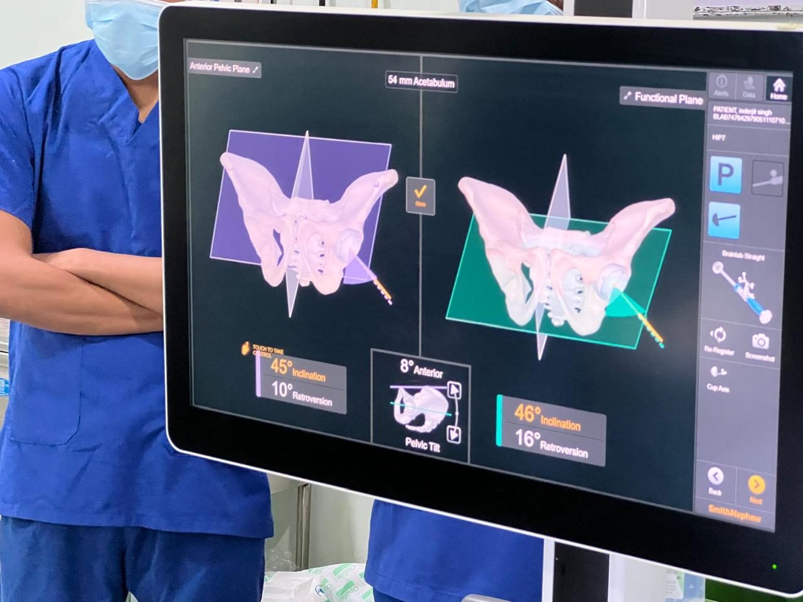
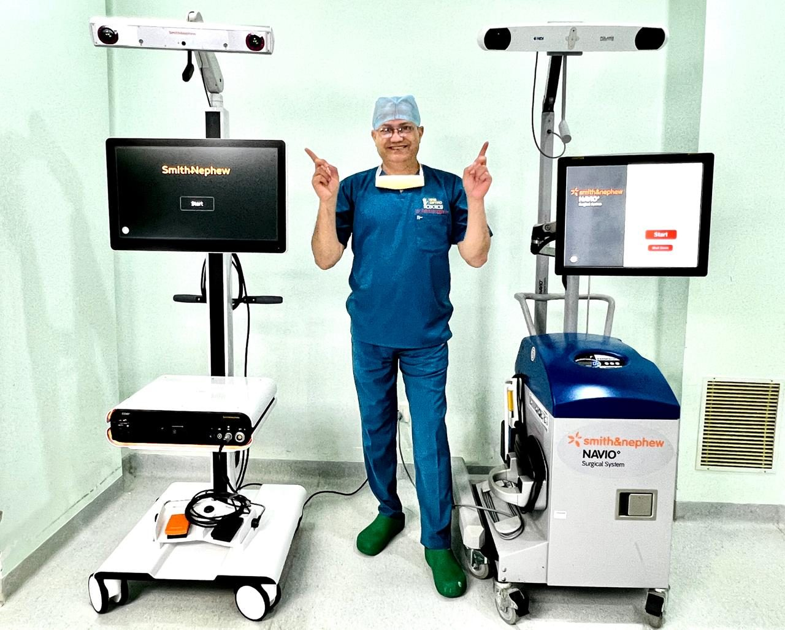
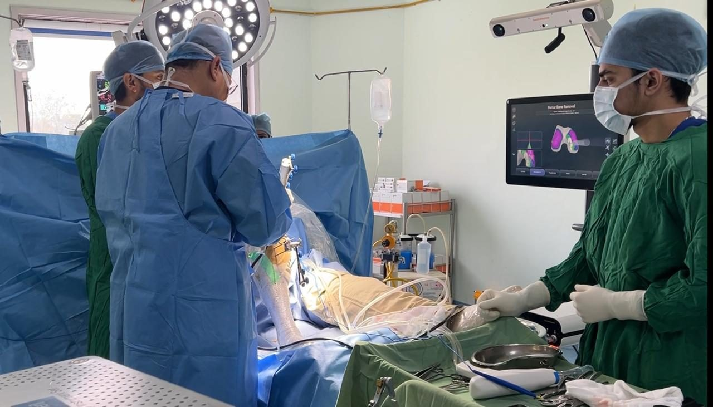
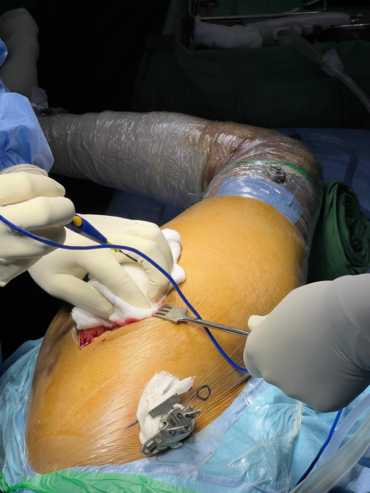
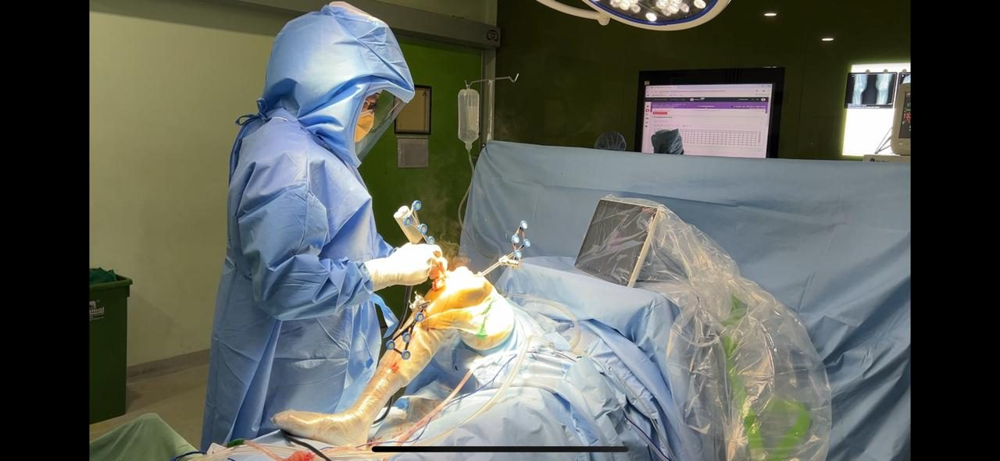
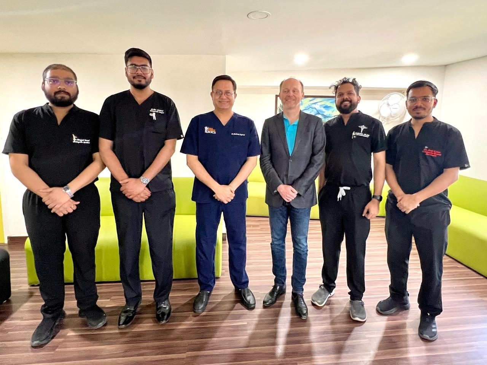

Treatments offered hereਇੱਥੇ ਹੋਣ ਵਾਲੇ ਇਲਾਜ
Which operation suits you depends on how much of the joint is worn, your age and your activity level. That is decided in the consultation, not before it.ਕਿਹੜਾ ਆਪਰੇਸ਼ਨ ਠੀਕ ਹੈ, ਇਹ ਜੋੜ ਕਿੰਨਾ ਘਸਿਆ ਹੈ, ਉਮਰ ਤੇ ਰੋਜ਼ਾਨਾ ਕੰਮ ਉੱਤੇ ਨਿਰਭਰ ਕਰਦਾ ਹੈ। ਇਹ ਫ਼ੈਸਲਾ ਮੁਲਾਕਾਤ ਵਿੱਚ ਹੁੰਦਾ ਹੈ, ਪਹਿਲਾਂ ਨਹੀਂ।
Total knee replacementਪੂਰਾ ਗੋਡਾ ਬਦਲਣਾ
For arthritis that has spread across the whole joint. Planned with robotic assistance and measured alignment.ਜਦੋਂ ਗਠੀਆ ਪੂਰੇ ਜੋੜ ਵਿੱਚ ਫੈਲ ਗਿਆ ਹੋਵੇ। ਰੋਬੋਟ ਦੀ ਮਦਦ ਨਾਲ ਯੋਜਨਾ ਤੇ ਮਾਪੀ ਹੋਈ ਸਿੱਧ।
Half knee replacementਅੱਧਾ ਗੋਡਾ ਬਦਲਣਾ
When only one compartment is worn, the healthy part of the knee and the ligaments are left alone.ਜਦੋਂ ਗੋਡੇ ਦਾ ਸਿਰਫ਼ ਇੱਕ ਹਿੱਸਾ ਘਸਿਆ ਹੋਵੇ, ਤੰਦਰੁਸਤ ਹਿੱਸਾ ਤੇ ਲਿਗਾਮੈਂਟ ਉਵੇਂ ਰਹਿੰਦੇ ਹਨ।
Total hip replacementਪੂਰਾ ਚੂਲਾ ਬਦਲਣਾ
Planned in 3D before the operation, so implant size and position are worked out on your own anatomy.ਆਪਰੇਸ਼ਨ ਤੋਂ ਪਹਿਲਾਂ 3D ਯੋਜਨਾ, ਤਾਂ ਜੋ ਇੰਪਲਾਂਟ ਦਾ ਨਾਪ ਤੇ ਥਾਂ ਤੁਹਾਡੇ ਸਰੀਰ ਮੁਤਾਬਕ ਤੈਅ ਹੋਵੇ।
Sports injuries & arthroscopyਖੇਡਾਂ ਦੀਆਂ ਸੱਟਾਂ ਤੇ ਆਰਥਰੋਸਕੋਪੀ
Ligament and cartilage injuries treated through keyhole surgery, with a structured return to activity.ਲਿਗਾਮੈਂਟ ਤੇ ਕਾਰਟੀਲੇਜ ਦੀਆਂ ਸੱਟਾਂ ਦਾ ਦੂਰਬੀਨ ਸਰਜਰੀ ਨਾਲ ਇਲਾਜ, ਨਾਲ ਹੌਲੀ-ਹੌਲੀ ਕੰਮ ਉੱਤੇ ਵਾਪਸੀ।
Trauma & fracture careਹਾਦਸੇ ਤੇ ਹੱਡੀ ਟੁੱਟਣ ਦਾ ਇਲਾਜ
Fractures and revision surgery, supported by 24-hour imaging and 45 critical care beds.ਹੱਡੀ ਟੁੱਟਣ ਤੇ ਦੁਬਾਰਾ ਸਰਜਰੀ, ਨਾਲ 24 ਘੰਟੇ ਸਕੈਨ ਤੇ 45 ICU ਬਿਸਤਰੇ।
Children's orthopaedics & scoliosisਬੱਚਿਆਂ ਦੀਆਂ ਹੱਡੀਆਂ ਤੇ ਰੀੜ੍ਹ ਦੀ ਟੇਢ
Growth-related bone and joint problems, and assessment of spinal curves in children and teenagers.ਵਧਦੀ ਉਮਰ ਨਾਲ ਜੁੜੀਆਂ ਹੱਡੀਆਂ ਤੇ ਜੋੜਾਂ ਦੀਆਂ ਸਮੱਸਿਆਵਾਂ, ਤੇ ਬੱਚਿਆਂ ਵਿੱਚ ਰੀੜ੍ਹ ਦੀ ਟੇਢ ਦੀ ਜਾਂਚ।
What robotic assistance actually addsਰੋਬੋਟ ਦੀ ਮਦਦ ਨਾਲ ਕੀ ਫ਼ਰਕ ਪੈਂਦਾ ਹੈ
A plan built on your anatomy. The joint is mapped before any cut is made, so implant position is decided against your measurements.
Alignment that can be checked. Navigation runs live through the operation, and the result is verified on screen rather than by eye.
Less disturbance to soft tissue. The aim is to protect the ligaments and muscle around the joint, which is what physiotherapy then works with.
Robotic assistance is a surgical tool, not a guarantee. Suitability, benefits and risks are explained to you before you consent.ਰੋਬੋਟ ਇੱਕ ਸੰਦ ਹੈ, ਗਰੰਟੀ ਨਹੀਂ। ਤੁਹਾਡੇ ਲਈ ਢੁਕਵਾਂ ਹੈ ਜਾਂ ਨਹੀਂ, ਫ਼ਾਇਦੇ ਤੇ ਖ਼ਤਰੇ — ਸਹਿਮਤੀ ਤੋਂ ਪਹਿਲਾਂ ਸਭ ਸਮਝਾਇਆ ਜਾਂਦਾ ਹੈ।

From first visit to walking againਪਹਿਲੀ ਮੁਲਾਕਾਤ ਤੋਂ ਮੁੜ ਤੁਰਨ ਤੱਕ
Consultation & scansਮੁਲਾਕਾਤ ਤੇ ਸਕੈਨ
X-ray or MRI on site, examined the same day, and a frank conversation about whether surgery is needed at all.X-ray ਜਾਂ MRI ਇੱਥੇ ਹੀ, ਉਸੇ ਦਿਨ ਜਾਂਚ, ਤੇ ਸਾਫ਼ ਗੱਲ ਕਿ ਆਪਰੇਸ਼ਨ ਦੀ ਲੋੜ ਹੈ ਜਾਂ ਨਹੀਂ।
Planning & approvalsਯੋਜਨਾ ਤੇ ਮਨਜ਼ੂਰੀ
Pre-operative checks, the surgical plan, and the insurance desk handling your cashless or TPA paperwork.ਆਪਰੇਸ਼ਨ ਤੋਂ ਪਹਿਲਾਂ ਦੀ ਜਾਂਚ, ਸਰਜਰੀ ਦੀ ਯੋਜਨਾ, ਤੇ ਬੀਮੇ ਦਾ ਕਾਗ਼ਜ਼ੀ ਕੰਮ ਸਾਡਾ ਕਾਊਂਟਰ।
Surgery & ward careਆਪਰੇਸ਼ਨ ਤੇ ਵਾਰਡ ਦੀ ਸੰਭਾਲ
The operation, then inpatient care with the consultant reviewing you and physiotherapy starting early.ਆਪਰੇਸ਼ਨ, ਫਿਰ ਦਾਖ਼ਲ ਰਹਿ ਕੇ ਸੰਭਾਲ — ਡਾਕਟਰ ਦੀ ਜਾਂਚ ਤੇ ਛੇਤੀ ਸ਼ੁਰੂ ਹੋਣ ਵਾਲੀ ਫ਼ਿਜ਼ੀਓਥੈਰੇਪੀ।
Rehabilitation at homeਘਰ ਵਿੱਚ ਕਸਰਤ ਤੇ ਸੰਭਾਲ
Written instructions, an exercise programme and follow-up appointments. Recovery time varies from patient to patient.ਲਿਖਤੀ ਹਦਾਇਤਾਂ, ਕਸਰਤ ਦਾ ਪ੍ਰੋਗਰਾਮ ਤੇ ਅਗਲੀਆਂ ਮੁਲਾਕਾਤਾਂ। ਠੀਕ ਹੋਣ ਦਾ ਸਮਾਂ ਹਰ ਮਰੀਜ਼ ਲਈ ਵੱਖਰਾ ਹੈ।

Dr. Shubhang Aggarwalਡਾ. ਸ਼ੁਭੰਗ ਅਗਰਵਾਲ
Director & Consultant Orthopaedic Surgeon — joint replacement, robotics, traumaਡਾਇਰੈਕਟਰ ਤੇ ਹੱਡੀਆਂ ਦੇ ਸਰਜਨ — ਜੋੜ ਬਦਲਣਾ, ਰੋਬੋਟਿਕ ਸਰਜਰੀ, ਹਾਦਸੇ
Practising joint replacement surgery since 2004, with patients travelling from Himachal Pradesh, Jammu & Kashmir and Rajasthan. He introduced computer-navigated joint replacement in Jalandhar and robotic joint replacement at this hospital.
Ask the desk for his registration details and qualifications at your consultation.
Cashless & TPAਕੈਸ਼ਲੈਸ ਤੇ TPA
Insurance approvals, government schemes and paperwork are handled by our desk before admission.ਬੀਮੇ ਦੀ ਮਨਜ਼ੂਰੀ, ਸਰਕਾਰੀ ਸਕੀਮਾਂ ਤੇ ਕਾਗ਼ਜ਼ੀ ਕੰਮ ਦਾਖ਼ਲੇ ਤੋਂ ਪਹਿਲਾਂ ਸਾਡਾ ਕਾਊਂਟਰ ਸੰਭਾਲਦਾ ਹੈ।
Everything on siteਸਭ ਕੁਝ ਇੱਕੋ ਥਾਂ
MRI and CT 24 hours, on-site pathology, laminar airflow theatres and 45 critical care beds.24 ਘੰਟੇ MRI ਤੇ CT, ਹਸਪਤਾਲ ਦੀ ਆਪਣੀ ਲੈਬ, ਲੈਮੀਨਰ ਏਅਰਫ਼ਲੋ ਥੀਏਟਰ ਤੇ 45 ICU ਬਿਸਤਰੇ।
Coming from out of townਬਾਹਰੋਂ ਆ ਰਹੇ ਹੋ?
Send reports ahead and we will schedule the consultation and scans on the same day.ਰਿਪੋਰਟਾਂ ਪਹਿਲਾਂ ਭੇਜ ਦਿਓ, ਅਸੀਂ ਮੁਲਾਕਾਤ ਤੇ ਸਕੈਨ ਇੱਕੋ ਦਿਨ ਰੱਖ ਦਿਆਂਗੇ।
Photographs from the unitਵਿਭਾਗ ਦੀਆਂ ਤਸਵੀਰਾਂ
The robotics platform, the navigation screen and the theatre it all happens in.




